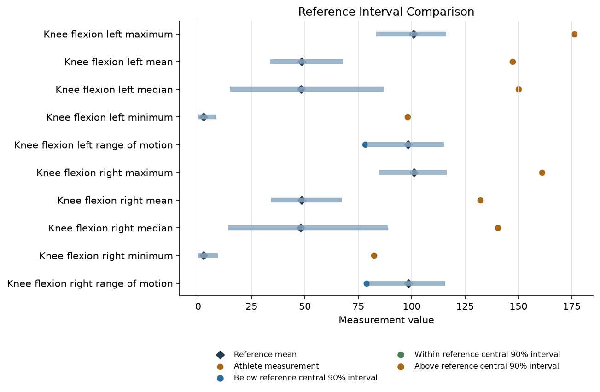
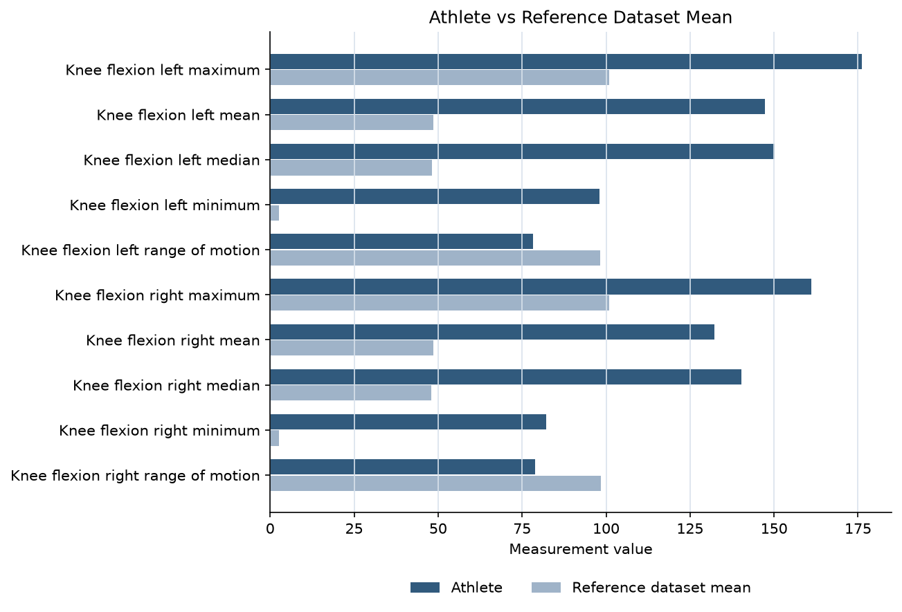

Knee sagittal-plane flexion features
Clinical Relevance
10 supporting feature(s) fell outside the reference dataset's central 90% interval (2 low-tail, 8 high-tail). This is a dataset-relative comparison, not a clinical threshold.
Interpretation
Sagittal-plane knee flexion is commonly evaluated in jump-landing ACL biomechanics. Prospective and clinical jump-landing studies discuss knee mechanics as part of neuromuscular-control assessment.
Suggested Clinical Consideration
Consider reviewing the landing video and full lower-extremity movement pattern with a qualified clinician or biomechanist.
Limitations
This observation is descriptive and dataset-relative. It is not diagnostic, does not predict ACL injury, and does not establish tissue status or ligament integrity.
Supporting Literature
- Hewett TE, Myer GD, Ford KR, Heidt RS Jr, Colosimo AJ, McLean SG, van den Bogert AJ, Paterno MV, Succop P. Biomechanical measures of neuromuscular control and valgus loading of the knee predict anterior cruciate ligament injury risk in female athletes: a prospective study. Am J Sports Med. 2005;33(4):492-501. DOI: 10.1177/0363546504269591
- Padua DA, Marshall SW, Boling MC, Thigpen CA, Garrett WE Jr, Beutler AI. The Landing Error Scoring System (LESS) is a valid and reliable clinical assessment tool of jump-landing biomechanics: The JUMP-ACL study. Am J Sports Med. 2009;37(10):1996-2002. DOI: 10.1177/0363546509343200
Athlete vs Reference Dataset
| Measurement | Athlete | Reference Dataset Mean | Reference Dataset Central 90% Interval | Percentile |
|---|---|---|---|---|
| Knee flexion left maximum | 176.19 | 100.96 | 83.44 to 116.23 | 100.0th |
| Knee flexion left mean | 147.34 | 48.54 | 33.66 to 67.66 | 100.0th |
| Knee flexion left median | 150.16 | 48.27 | 14.76 to 86.86 | 100.0th |
| Knee flexion left minimum | 98.02 | 2.62 | 0.20 to 8.65 | 100.0th |
| Knee flexion left range of motion | 78.17 | 98.34 | 79.01 to 115.19 | 4.0th |
| Knee flexion right maximum | 161.09 | 101.01 | 85.01 to 116.47 | 100.0th |
| Knee flexion right mean | 132.23 | 48.49 | 34.16 to 67.45 | 100.0th |
| Knee flexion right median | 140.38 | 48.06 | 14.24 to 88.95 | 100.0th |
| Knee flexion right minimum | 82.26 | 2.55 | 0.16 to 9.27 | 100.0th |
| Knee flexion right range of motion | 78.83 | 98.46 | 80.18 to 115.79 | 4.0th |

